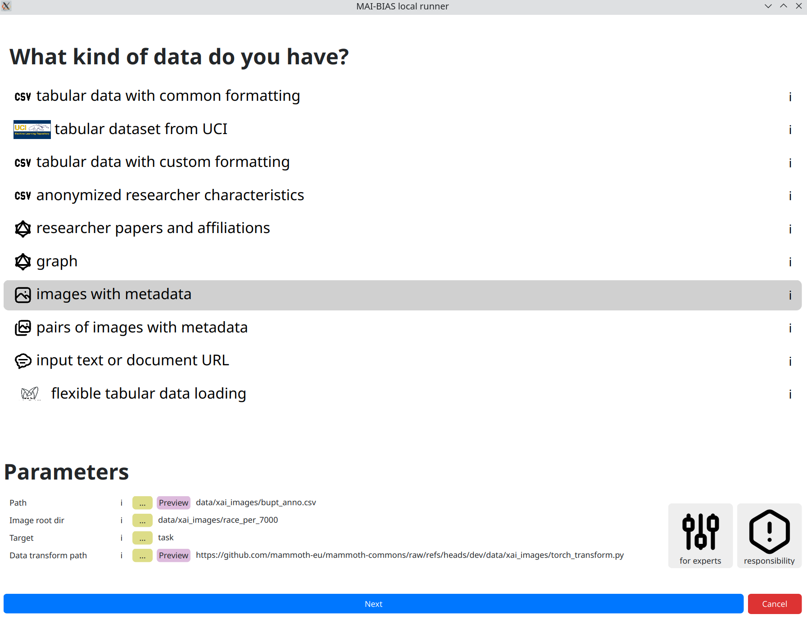
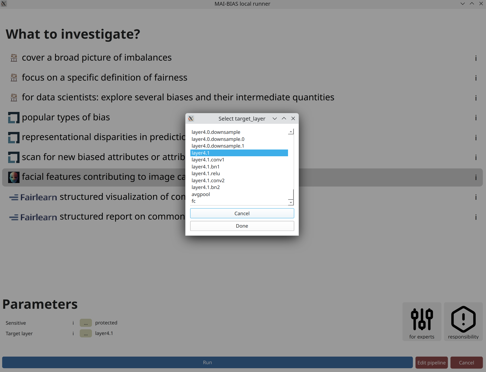

Requirements
This tutorial assumes that you have the MAI-BIAS toolkit already installed and a computer vision dataset and model available. Find installation instructions here, and we will use a toy model and dataset from our integration test data here. You can use other urls or -if you are running the local runner- local files too. Everything shown below is for the local runner.
Some technical terms are involved; these will be explained, but realistically running computer vision experiments requires obtaining a dataset and understanding how it is structured. Expert instructions, like those below, can usually cover this. It is also assumed that you have some basic familiarity with the local runner. If unsure, read first how to audit a tabular dataset in 10 clicks here here.
Dataset
From the runner's starting screen, start a new analysis. The dataset selection screen opens, and we will load a dataset of human faces (you can use any dataset depicting humans).
In general, model creators or data owners are responsible for providing information like the above to non-technical people. Once inputted, you can create variations of the same run so that you do not need to re-enter information.

Model
From the runner's starting screen, start a new analysis. The dataset selection screen opens, and we will load a dataset of human faces (you can use any dataset depicting humans).
In general, model creators or data owners are responsible for providing information like the above to non-technical people. Once inputted, you can create variations of the same run so that you do not need to re-enter information.

Analysis parameters
AI models are comprised of multiple layers, with each potentially focusing on different
aspects of the image. You can select from these modules by providing its name within the
machine learning infrastructure, or selecting it by clicking on the ... button,
as shown below.
Layers presented on top are responsible for reading the image and extracting simple visual ques, whereas layers presented near the bottom of this list are responsible for extracting high-level visual features and eventually making predictions. For this particular model, layers are further organized into groups, and we select the second to last, as this contains the finally extracted visual features. Incidentally, the last layer is responsible for making the prediction.

Results
The central result of our analysis is a heatmap of face regions, where certain areas or accessories are colored red if the model focuses on them a lot, and blue otherwise. There is no unique judgment that can be made, as these results are qualitative, but you can get a sense on whether the model focuses on important features for the task at hand and therefore uncover unwanted biases in reasoning. For example, a model may focus primarily on image backgrounds, which is a tell-tale sign of environment biases. To help judge what exactly is being perceived, example patches from the dataset's images accompany then heatmap.
An interactive version of these results can be found here.